Scores still come from one common readout of the level-0 map, so RG gets no evaluation shortcut.
Roadmap
What this talk covers
1 · Problem
Unsupervised chunking of a symbol stream; why nested and transitive chunks are hard for one geometry.
2 · Mechanism
From SyncMap to NSGD, the NS kernel and RG: relation graph, forces, tokenization, scales, feedback, readout.
3 · Protocol
ARI vs NMI, the level-mean hierarchy score, the benchmark design, equal steps vs equal compute.
4 · Benchmark
8 scenarios × 5 models × 5 seeds at 100k steps, with 3-D maps and per-level scores.
5 · Targeted experiments
Community-orientation sweep, harder hierarchies, and RG with recursion switched off.
6 · Conclusions
What the evidence supports, known limitations, and the road to causal inference.
PART 1
The problem
Find the chunks hidden in a symbol stream — and the chunks of chunks — without labels.
Task
Recover hidden chunks, and their nesting, from a random walk
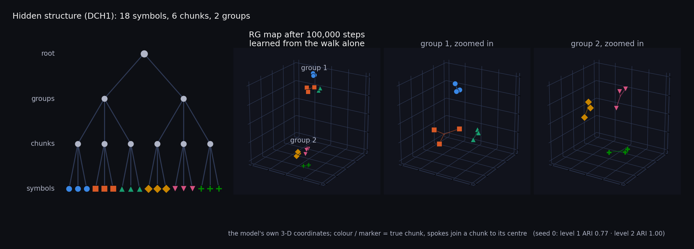
A random walk over a .dot graph emits one symbol at a time. Each model sees only that stream and must place symbols so that true chunks (flat) or every nested level (hierarchy) come out as clusters. Labels are used only for scoring.
Starting point
Original SyncMap: co-active symbols contract, then DBSCAN reads clusters
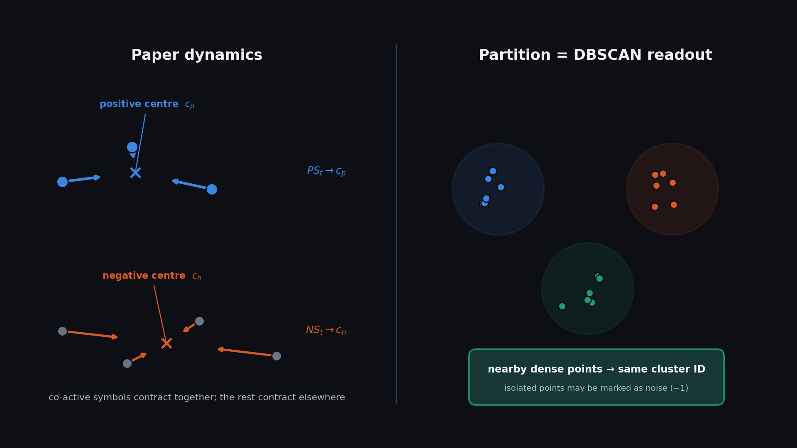
Every symbol is a point in a Euclidean space.
The positive set PSt (recently active) contracts to its centre cp.
The negative set NSt contracts to cn.
After training, DBSCAN turns coordinates into a partition: points connected by dense neighbourhoods share an ID; isolated points may be noise (−1).
Vargas & Asabuki, AAAI 2021. The repository's syncmap baseline ports the reference release with a constant learning rate.
Why it is hard
Two hard cases: transitive chunks and nested levels
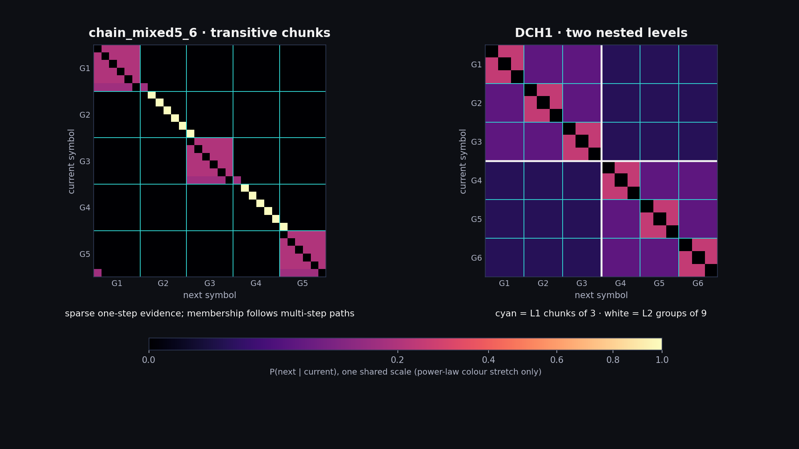
Both maps are the real P(next | current) of the DOT files; the lines are the true boundaries, drawn only for the viewer.
Motivation
One geometry, one scale: what goes wrong on a hierarchy
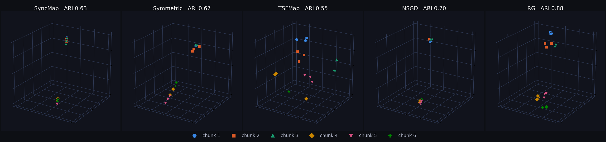
TSFMap spreads the six chunks evenly over its normalised sphere: the fine level is perfect (L1 ARI 0.97), but the two groups are not separated (L2 0.42).
SyncMap, Symmetric and NSGD do the opposite: two far-apart blobs (L2 = 1.00) with the chunks inside merged (L1 0.26–0.33). RG keeps both (L1 0.59, L2 1.00).
PART 2
From SyncMap to RG
Lineage, the level kernel, and the five changes that make recursion work.
Lineage
After Early NS the work split into two branches
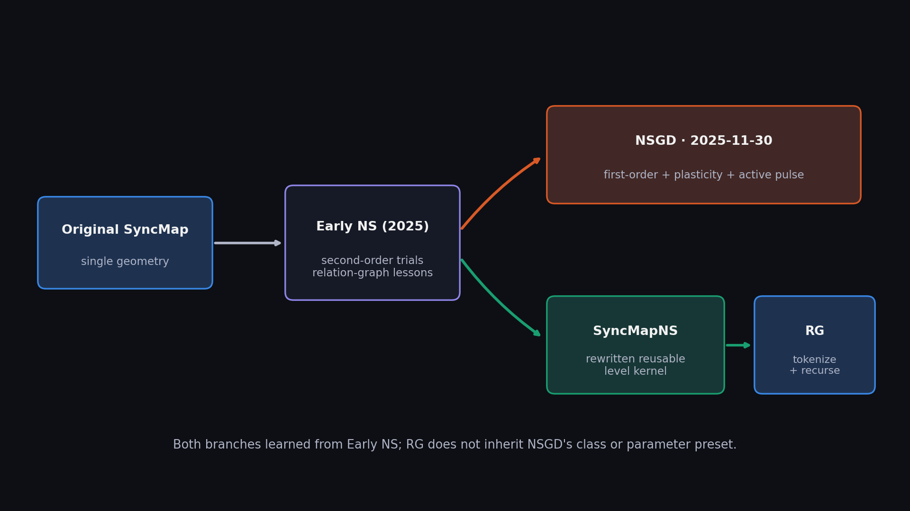
Prerequisite
NSGD: make the dynamics first-order before making them hierarchical
Early NS · second order
mv̇ = F − γ v, ẋ = v
position + velocity + damping
inertia → overshoot and ringing
patches added on top of the relation springs
NSGD · first order
Δx = η · P · F
positions move directly along the net force
no velocity, no inertia
online relation graph, plasticity P and an active pulse
This step fixed the optimiser skeleton, not the hierarchy. NSGD is kept as a strong baseline in every experiment.
Level kernel
SyncMapNS: one reusable level; RG adds recursion outside it
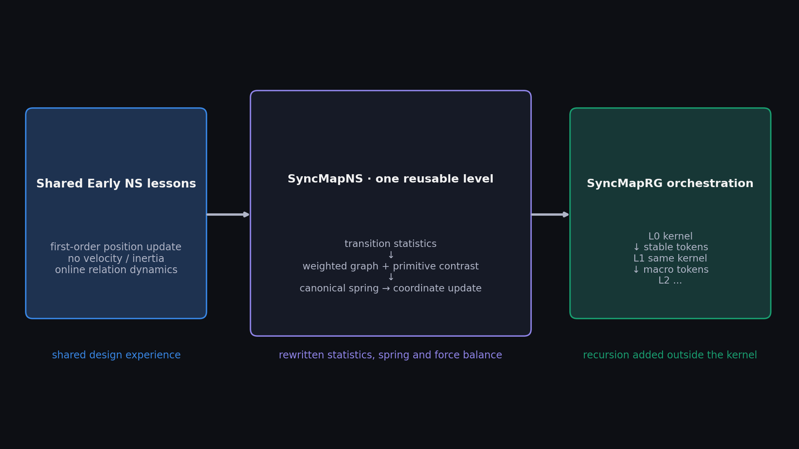
Shared with NSGD: first-order updates, coordinates driven by an online relation graph.
Rewritten: transition statistics, a bidirectional spring with a rest length, degree normalisation.
RG's kernel switches off NSGD's plasticity and pulse and keeps the primitive force and the relation spring.
Token extraction, coarse-graining and the multi-level schedule live in SyncMapRG, not in the kernel.
Input
One random walk feeds two signals: an immediate force and a relation memory
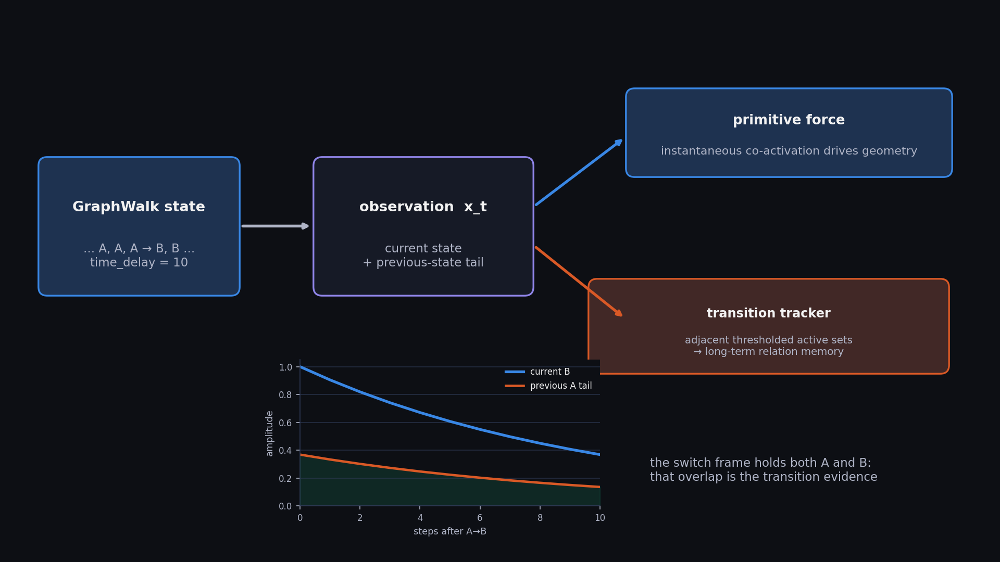
Change 1
Adjacent observations become a persistent, undirected relation graph
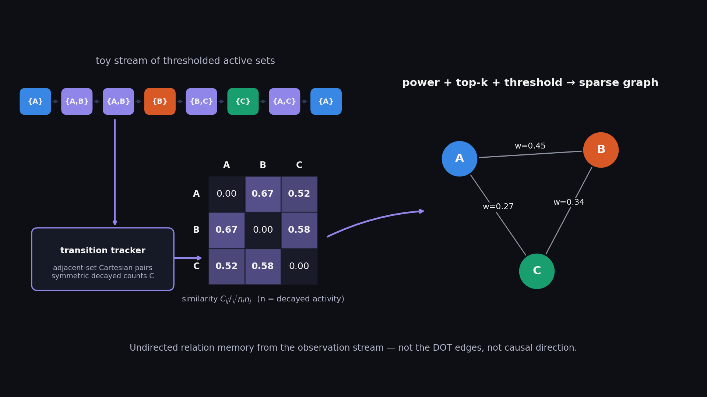
Counts decay with memory M = 300 observations; every Tpush = 100 steps the strongest neighbours (top-k = 12, above threshold) become spring edges.
Change 2
Keep SyncMap's contrastive force, made explicit and bounded
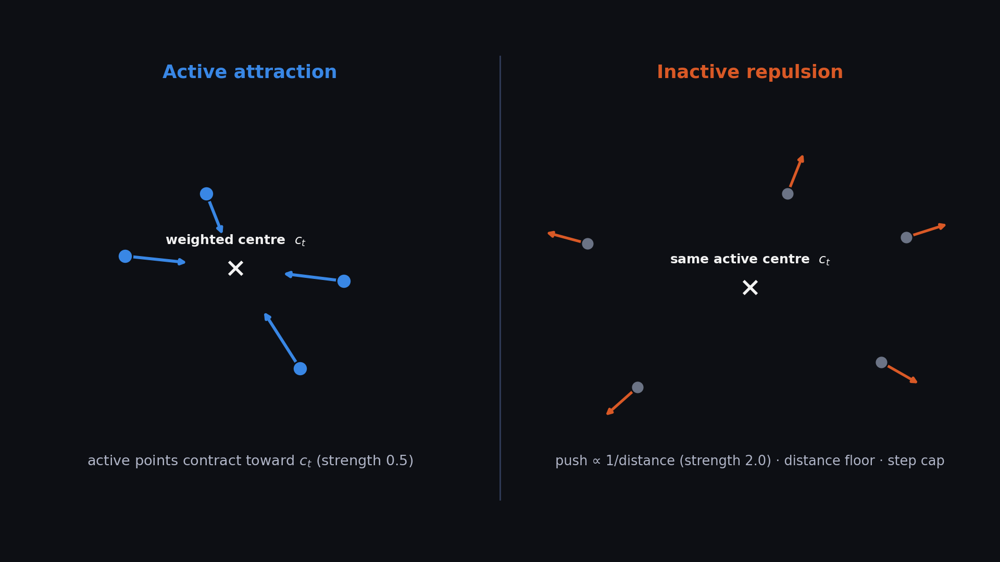
For the current active set Pt with weighted centre ct:
a = 0.5, b = 2.0. The push falls off as 1/distance (a vector divided by the squared distance); a distance floor and a per-step cap keep it bounded. Label-free, read straight from the input.
Change 3
A relation edge has a preferred length — it does not only pull
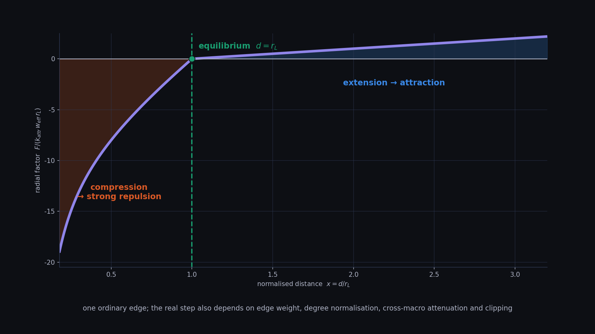
Every edge has a target distance rL (the level's natural length).
Too far → attraction; too close → strongly non-linear repulsion.
The same normalised curve is reused at every level; edge weight and node degree only scale its strength.
kattr = 0.07 keeps the spring a secondary force.
Two separations
Two ways points are pushed apart: per observation, and per macro group
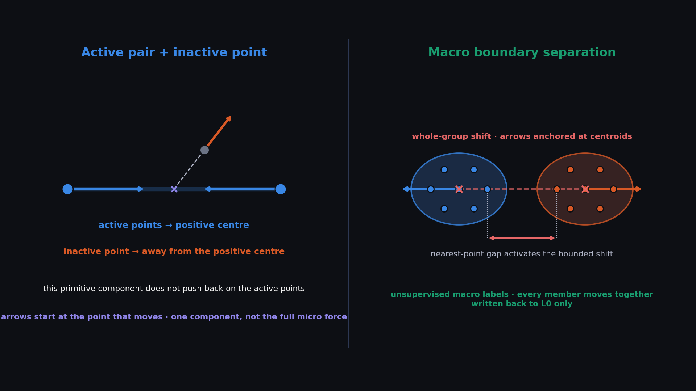
Level 0
The level-0 update: sum the micro forces, clip, step
3.16 > 2 clears the straightened span of a two-hop chain of unit edges, leaving room for the coarse scale.
A motivated choice, not a theorem; no sweep shows it is the unique optimum.
Known limitation
Level cadence: the default scheduler aliases deep clocks
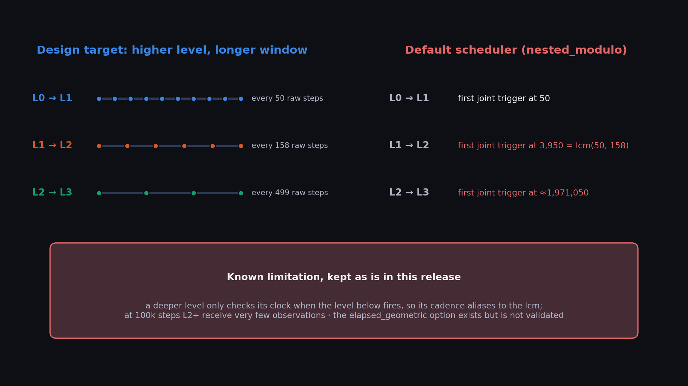
Change 5
Macro feedback keeps coarse groups separable inside level 0
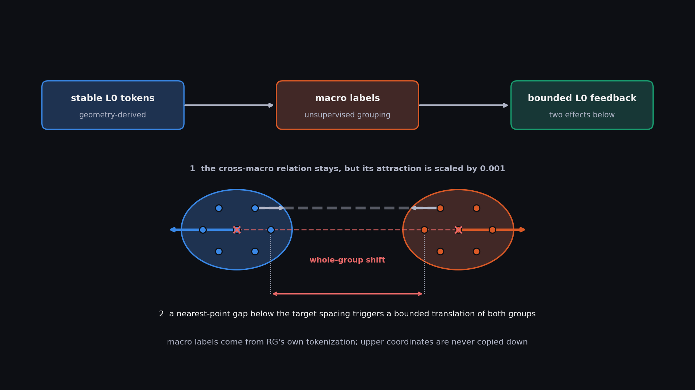
Readout
From coordinates to partitions: one reader for every model
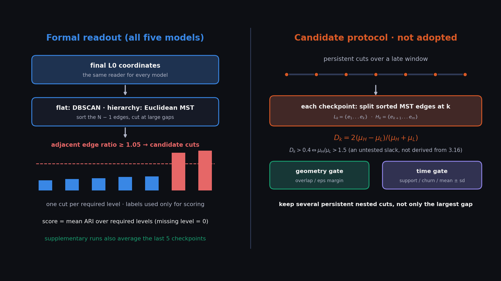
Summary
What actually changed relative to SyncMap
Original SyncMap
RG
current positive / negative sets only
plus a finite-memory relation graph from adjacent observations
attraction toward set centres
bounded contrastive force + rest-length spring + local obstacle
a single distance scale
natural length 3.16L per level
one layer of coordinates
tokens re-enter the same kernel: L0 / L1 / L2 …
no feedback
bounded macro feedback written back to L0
The biggest change is structural: relations become an explicit graph, scale becomes a level variable, and coarse-graining feeds back into the dynamics instead of stopping at post-processing.
PART 3
How we score
Metrics, the hierarchy score, the benchmark, and what "equal" means.
Metric
ARI checks the whole partition; NMI measures shared information
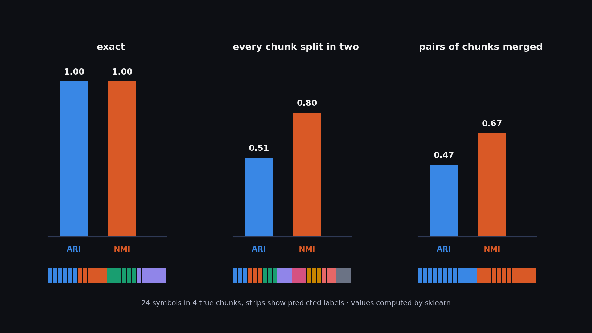
NMI: how much information predicted and true labels share.
ARI: every pair of symbols, same-or-different cluster, corrected for chance. 1 = identical, ≈0 = random, can be negative.
Over-splitting keeps a lot of information, so NMI stays high while ARI drops.
All rankings use ARI; NMI is reported as a diagnostic.
Hierarchy score
Hierarchies: average ARI over every required level
ARIhier = (1/D) ΣL=1…D ARIL
Every required level counts equally; a missing level scores 0.
Per-level ARI is always reported next to it, so the weakest level stays visible.
Level 1 is the finest; the top level of the benchmark graphs has only two groups.
An earlier "joint minimum" rule let the single worst cut decide the whole score and gave no credit for partial success; it is not used here.
Benchmark
Eight scenarios, five models, five seeds, 100k steps
Scenario
Family
States
Classes (fine → coarse)
fixed5_6
flat
30
5
UB_mixed_chunk_20_5_5
flat
30
3 (sizes 20/5/5)
imbalanced_fixed_300
flat
300
14
chain_mixed5_60
flat
300
5
DCH1
hierarchy
18
6 / 2
IH
hierarchy
18
5 / 2
EC
hierarchy
33
15 / 2
IEH
hierarchy
18
7 / 5 / 4 / 2
SyncMap Symmetric TSFMap NSGD RG
Each model uses its maintained profile; baselines follow their papers (SyncMap and Symmetric with a constant learning rate).
Seeds 0–4; the same seed gives the same walk.
Representative cases: balanced, unbalanced, imbalanced and chain-like flat chunks; two- to four-level hierarchies.
Score: final-checkpoint ARI (hierarchy: level mean).
Budget
Equal steps are not equal compute
Equal steps: every model reads the same number of input states — this measures data efficiency.
Equal wall-clock: every model gets the same seconds — this measures compute efficiency.
All results here are equal-step. They say nothing about equal wall-clock.
RG carries graph statistics, periodic clustering and extra levels each step.
Mean s / run (100k)
SyncMap
NSGD
RG
RG / NSGD
fixed5_6
3.1
4.5
18.6
4.1×
chain_mixed5_60
4.5
9.3
27.7
3.0×
imbalanced_fixed_300
4.8
8.8
31.6
3.6×
DCH1
2.3
4.4
63.3
14×
EC
2.7
5.2
89.2
17×
IEH
2.2
4.6
64.5
14×
RG costs about 3–4× NSGD on flat graphs, where it runs one level, and 14–17× on hierarchies, where it runs 3–5 levels.
No single winner: RG leads on three scenarios, NSGD on three
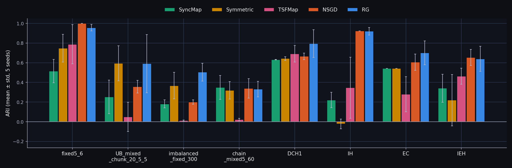
Numbers
ARI, mean ± sd over five seeds
Scenario
SyncMap
Symmetric
TSFMap
NSGD
RG
fixed5_6
0.516 ± 0.119
0.747 ± 0.141
0.788 ± 0.199
1.000 ± 0.000
0.957 ± 0.033
UB_mixed_chunk_20_5_5
0.253 ± 0.170
0.594 ± 0.178
0.049 ± 0.148
0.357 ± 0.064
0.592 ± 0.296
imbalanced_fixed_300
0.181 ± 0.041
0.367 ± 0.135
0.012 ± 0.006
0.202 ± 0.022
0.505 ± 0.090
chain_mixed5_60
0.349 ± 0.121
0.320 ± 0.089
0.022 ± 0.012
0.340 ± 0.098
0.332 ± 0.079
DCH1
0.632 ± 0.003
0.643 ± 0.018
0.691 ± 0.083
0.665 ± 0.033
0.795 ± 0.141
IH
0.221 ± 0.078
−0.022 ± 0.050
0.346 ± 0.311
0.924 ± 0.000
0.920 ± 0.039
EC
0.542 ± 0.000
0.542 ± 0.000
0.281 ± 0.178
0.606 ± 0.084
0.700 ± 0.121
IEH
0.341 ± 0.143
0.220 ± 0.261
0.463 ± 0.082
0.654 ± 0.081
0.640 ± 0.129
Final-checkpoint ARI; hierarchy rows are the mean over required levels. Bold = best mean; several "wins" are within one standard deviation.
Per level
On the benchmark hierarchies the coarse level is nearly free
Level ARI (fine → coarse)
SyncMap
Symmetric
TSFMap
NSGD
RG
DCH1 · L1 / L2
0.26 / 1.00
0.29 / 1.00
0.97 / 0.42
0.33 / 1.00
0.59 / 1.00
IH · L1 / L2
0.37 / 0.07
−0.02 / −0.02
0.42 / 0.27
0.85 / 1.00
0.84 / 1.00
EC · L1 / L2
0.08 / 1.00
0.08 / 1.00
0.50 / 0.06
0.21 / 1.00
0.40 / 1.00
IEH · L1 / L2 / L3 / L4
0.48 / 0.76 / 0.10 / 0.02
0.13 / 0.18 / 0.27 / 0.29
0.48 / 0.69 / 0.37 / 0.31
0.48 / 0.46 / 0.68 / 1.00
0.57 / 0.57 / 0.85 / 0.57
SyncMap, Symmetric, NSGD and RG all get L2 = 1.00 on DCH1 and EC. The top level has only two groups, and the walk crosses between them with probability 0.11, so it stays inside one group 89% of the time.
The models differ almost only at the fine level, so these graphs cannot show whether RG's multi-scale design helps the coarse levels. Part 5 builds harder hierarchies to test exactly that.
3-D maps · flat
Imbalanced communities: RG keeps the large and the small chunks apart
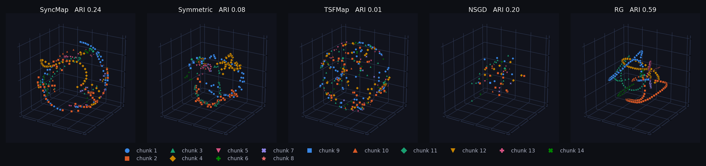
imbalanced_fixed_300 · 300 states in 14 chunks of very different sizes · seed 0 · each model in its own 3-D space.
Over time
Scores jump between checkpoints — endpoints alone are noisy
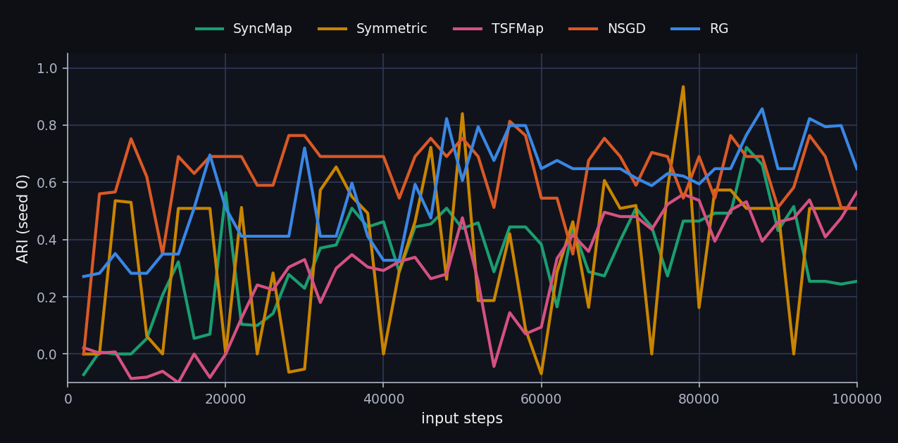
IEH, seed 0, ARI every 2,000 steps. The benchmark table uses the final checkpoint; the supplementary experiments average the last five checkpoints (last 10,000 steps) instead.
PART 5
Targeted experiments
Where does each model win, and does RG's hierarchy help when the coarse level is hard?
Design
Three questions the benchmark could not answer
A · Orientation
Is RG better on few large communities and NSGD on many small ones? Seven 300-state graphs from 3×100 to 60×5.
B · Harder hierarchies
Does RG keep coarse groups apart when they are weakly separated? Four hierarchies × three mixing levels.
C · Recursion
Is it the recursion that helps? RG with level1_enabled=false: same kernel and readout, no tokens, no upper levels, no macro feedback.
100k steps, 5 paired seeds (one seed = the same walk for every model), all five models plus RG without recursion: 535 runs.
Score: formal ARI averaged over the last 5 checkpoints (last 10k steps), not the final one.
Diagnostic: oracle-K — the same map cut at the true cluster count — separates "the map lacks it" from "the readout misses it".
Every state is visited within 0.4k–34k steps on every graph, so 100k steps is at least 3× full coverage.
A · Orientation
Community orientation decides the flat winner
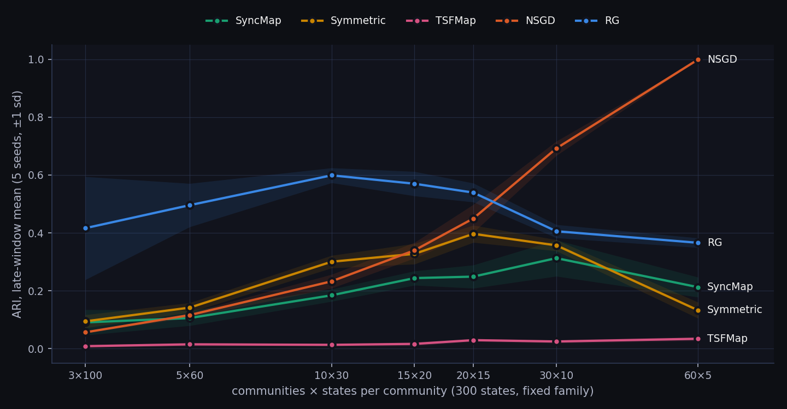
RG beats NSGD on every seed from 3×100 to 15×20, by 0.23–0.38; at 20×15 by 0.09.
NSGD wins from 30×10 (by 0.29) and is perfect on 60×5, where RG scores 0.37.
Crossover: between 20 and 30 communities of 15–10 states.
Nobody solves few large chain-shaped communities: RG's best is 0.60 (10×30). TSFMap fails throughout.
B · Harder hierarchies
Four hierarchies, three levels of coarse mixing
Graph
States
Groups
DCH1 (benchmark)
18
6 / 2
HIMB3 (uneven)
48
10 / 3
H4x4x5
80
16 / 4
H3x3x3x4
108
27 / 9 / 3
Probability that the next state stays in the same top-level group:
level_switch_decay
0.25 (default)
0.5
0.75
two-level graphs, top level
0.89
0.78
0.66
H3x3x3x4, middle / top
0.86 / 0.97
0.69 / 0.89
0.49 / 0.75
fine level (chunk)
0.47–0.49
0.38–0.43
0.27–0.36
More top groups and more states than the benchmark; a larger decay makes the walk jump between coarse groups more often, so the coarse levels separate less.
B · Results
When the coarse level gets hard, NSGD collapses and RG holds
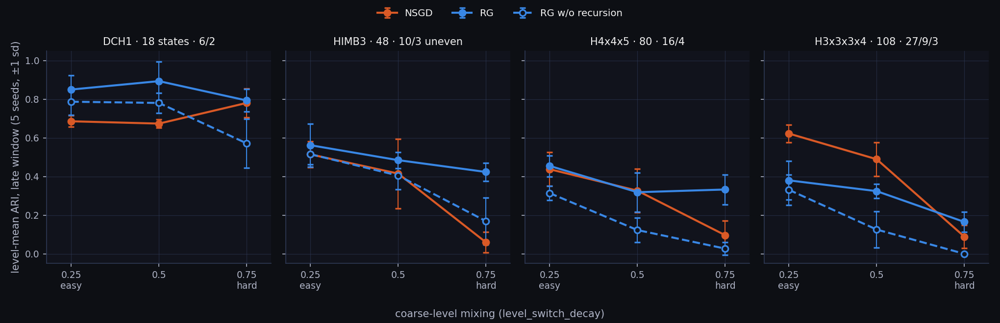
At the hardest mixing NSGD drops to 0.06–0.10 on HIMB3, H4x4x5 and H3x3x3x4; RG keeps 0.42, 0.33 and 0.17 (5/5 seeds each). RG leads on DCH1 at easy and medium mixing.
At easy and medium mixing they tie on HIMB3 and H4x4x5, and NSGD is clearly ahead on the three-level H3x3x3x4 (0.62 vs 0.38, 0/5 seeds for RG).
C · Recursion
The recursion is what helps
RG − RG w/o recursion
0.25
0.5
0.75
DCH1
+0.06
+0.11
+0.22
HIMB3
+0.05
+0.08
+0.25
H4x4x5
+0.14
+0.20
+0.31
H3x3x3x4
+0.05
+0.20
+0.17
mean
+0.08
+0.15
+0.24
Full RG is ahead in all 12 settings; on all five seeds in 8 of them.
The gain grows with mixing: recursion matters most when the coarse level is hard.
Without recursion RG collapses like NSGD at decay 0.75 (H4x4x5: 0.03; H3x3x3x4: 0.00).
The kernel alone costs ~20 s per run on these graphs; full RG 70–133 s.
This is the ablation the earlier analysis lacked: same kernel, same readout, same seeds — only tokenization, upper levels and macro feedback removed.
Map or readout?
RG's maps match or beat NSGD's in 11 of 12 settings
Level mean, formal → oracle
NSGD
RG
DCH1 · 0.25
0.66 → 0.76
0.79 → 0.95
HIMB3 · 0.75
0.14 → 0.41
0.40 → 0.73
H4x4x5 · 0.25
0.44 → 0.68
0.54 → 0.76
H4x4x5 · 0.75
0.12 → 0.51
0.44 → 0.65
H3x3x3x4 · 0.25
0.61 → 0.68
0.32 → 0.71
H3x3x3x4 · 0.5
0.50 → 0.74
0.28 → 0.68
H3x3x3x4 · 0.75
0.18 → 0.44
0.21 → 0.55
The formal readout loses 0.07–0.40 for every model: it is a large part of every score.
On H3x3x3x4 at easy mixing NSGD wins formally, but the maps are comparable (0.68 vs 0.71).
At easy mixing NSGD's map does hold the coarse groups (oracle level 2 = 1.00) that the MST cut misses.
At high mixing RG's coarse groups are really there: oracle level 2 of 0.97 vs NSGD's 0.70 on H4x4x5, 0.97 vs 0.49 on HIMB3.
3-D maps · H4x4x5
What "holding the coarse level" looks like
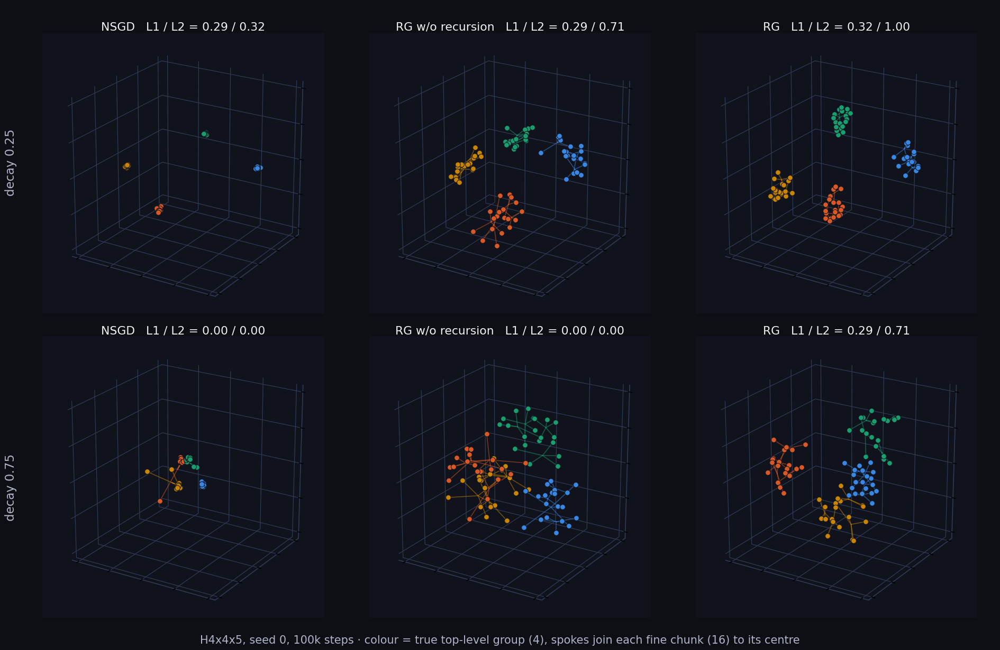
Answer
What each model is good at
NSGD
RG
Flat graphs
many small communities (≥ 30 of ≤ 10 states)
few to medium communities (3–20 of 15–100 states)
Hierarchies
well-separated levels, incl. the three-level graph at easy/medium mixing
weakly separated coarse levels; the fine level of small hierarchies
Why (evidence)
consistent with its strong spring + pulse (not ablated here)
recursion: without it RG collapses like NSGD
Weak spot
collapses when coarse groups mix; over-shrinks groups the readout then misses
many small communities; deep levels limited by the scheduler
Cost / 100k steps
6–10 s
32–34 s flat · 70–133 s hierarchy
PART 6
Conclusions
What the evidence supports, what it does not, and what comes next.
Supported
What the evidence supports
RG and NSGD are complementary: community orientation decides flat graphs (crossover at 20–30 communities of 300 states).
On hierarchies with weakly separated coarse levels RG keeps the groups apart where NSGD collapses — and the map, not only the score, shows it.
The recursion causes the gain: removing it costs 0.05–0.31 level-mean ARI in every hierarchy setting, more as mixing grows.
On the small benchmark hierarchies RG's advantage is at the fine level; their coarse level is solved by four of five models.
These are system-level results at 100,000 equal input steps with the maintained profiles; the recursion ablation is the only component-level test.
Not supported · limitations
What it does not show
No universal winner. NSGD wins many small communities and the three-level graph at easy mixing; at the hardest mixing SyncMap matches or beats RG on two of the four hierarchies.
No compute claim. RG costs 3–4× NSGD on flat graphs and 10–20× on hierarchies per step; nothing here is equal wall-clock.
The readout is a bottleneck. The single-checkpoint MST cut loses 0.07–0.40 ARI for every model and decides some comparisons.
Deep levels are under-fed. The default scheduler aliases upper clocks (50 → 3,950 → ~2M steps); the deepest results are limited by that, not only by the dynamics.
Variance. RG's seed spread is often the largest; five seeds separate large effects, not small ones.
Scope. Synthetic graph walks only, 100,000 steps, 3-D maps; no visual data and no causal inference yet.
Next
What comes next
1 · Readout
A persistent, multi-checkpoint cut rule (the candidate protocol in Part 2), validated against the oracle-K gap.
2 · Scheduler
Give upper levels their intended cadence, then repeat the deep-hierarchy experiments.
3 · Fair budgets
Equal wall-clock and matched memory alongside equal steps; ablate NSGD's spring and pulse as RG's recursion was ablated.
4 · Causal inference
Directed relations between the chunks RG finds: the CI line, from directed transition statistics to a tested causal-structure method.
Take-aways
Three sentences
RG turns SyncMap from one geometry into recursive multi-scale dynamics: unsupervised tokens become the next level's input.
The recursion measurably helps where coarse structure is weak, and RG wins few-to-medium communities, while NSGD wins many small ones.
It is not a universal winner: gains, cost, variance and the readout all depend on the structure.
Everything in this deck: github.com/Cyletix/SyncMapRGCI · benchmark report · supplementary report · this presentation in docs/presentation/
APPENDIX
Parameters and reproduction
A1 · RG level 0
RG level-0 parameters (maintained profile rg)
Item
Value
learning rate / max step
0.05 / 2.0
primitive active / inactive
0.5 / 2.0
graph spring kattr
0.07
local obstacle krepulse
1.0
macro repulsion kmacro
0.1
cross-macro attraction scale
0.001
transition memory M
300 (EMA, half-life ≈ 208)
graph push / top-k / threshold
100 / 12 / 0.1
internal clustering period
1,000
plasticity / pulse
off / off
Recursion
Value
scale growth
3.16 per level
memory growth
×10 per level
scheduler
nested_modulo
warm-up / renormalise
2,000 / 50
levels on flat graphs
L0 only
levels on hierarchies
depth + 1
hierarchy readout
MST gaps, ratio ≥ 1.05
observation threshold
0.1
Every run's full effective parameters are stored per row in the result CSVs (effective_model_params, effective_env_params).
A2 · Baselines
Baseline parameters (maintained profiles)
Model
Dynamics
Memory / state
Space
SyncMap
constant learning rate 0.05
none (input tail only)
3-D, size 10
Symmetric
constant 0.05; stochastic positive selection 0.3
state memory 3; 10k moving-average readout
3-D, size 10
TSFMap
rate 0.001; μ+ 6, μ− 3, μr 2
velocity decay 0.999
max-abs normalised; Ward 2–16 clusters
NSGD
rate 0.05; spring 1.0 + pulse 2.0; max step 5
co-activity memory 100; plasticity 0.99 → 0.01
density-scaled; KNN 12; push every 10
RG
see A1
transition memory 300 · 10L
3-D, 3.16L natural length
All five are scored by the same evaluator: DBSCAN on flat graphs and MST gaps on hierarchies, applied to the final 3-D coordinates. The models' own internal clustering settings do not enter the formal score.
A3 · Reproduce
Commands
# one comparison cell: 5 seeds of every model on one graph
python main.py --task 2 --profiles syncmap symmetric tsf nsgd rg \
--datasets datasets/hierarchy/DCH1_fixed_chunk_6_3.dot \
--comparison-sequence-lengths 100000 --comparison-trials 5 --metric ari --seed 0
# the whole benchmark, then the report and figures
python tools/benchmark.py run
python tools/benchmark.py report
# supplementary experiments (Part 5)
python tools/make_supp_datasets.py --stats
python tools/supp_run.py run --workers 3
python tools/supp_run.py showcase
python tools/supp_report.py
# the diagrams in this deck
python tools/deck_figures.py
Run from the repository root. Seeds 0–4 are trials 1–5 of --seed 0.